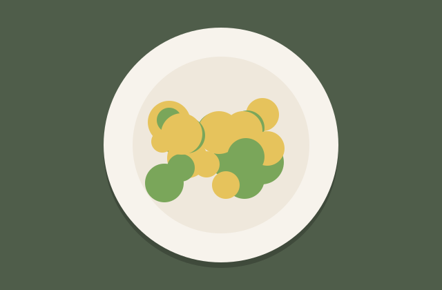

Weeknight Spaghetti Carbonara
Jump to recipePrint recipe
My Tuesday-night carbonara, ready before the table is set.
Every family has a dish that tastes like home. In ours, it was my nonna's carbonara, made in a dented aluminium pan that she refused to replace. She cooked it on Sunday evenings when everyone was too tired to talk, and somehow the kitchen would fill with stories again before the plates were empty.
When I moved into my first tiny apartment, I tried to make it from memory and failed, many times. Scrambled eggs, clumpy cheese, a sauce that disappeared into the pasta. It took me years (and a lot of phone calls to my aunt Rosa) to understand that carbonara is not about adding things. It is about timing.
This is the version I make on weeknights now. It uses five ingredients you can find almost anywhere, one pan and one pot, and it is on the table in less time than a delivery would take to arrive.

You won't believe these 12 kitchen gadgets chefs secretly use
Brightnest Home · Shop now
Why you'll love it
It is fast, it is cheap, and it feels like a treat. The sauce is made from eggs, cheese and the fat from the guanciale, emulsified with a splash of starchy pasta water. Nothing else.
Traditional carbonara has no cream: the eggs and pecorino make the sauce silky. If you have only ever had the creamy restaurant version, this one will surprise you.
What is guanciale?
Guanciale is cured pork cheek. It has more fat than pancetta and a deeper flavour, and that fat is what carries the sauce. Italian delis sell it in a piece; ask them to cut it 5 mm thick.
If you can't find guanciale, thick-cut pancetta or smoked bacon works fine. Bacon adds a smoky note that isn't traditional, but my kids love it.

Meal kits from 2.99 a serving
FreshCrate · Get the app
Tips for a silky sauce
Take the pan off the heat before adding the eggs, or they will scramble. The pasta should be hot enough to cook the eggs gently, but the pan should not be sizzling.
Keep a mug of pasta water nearby. If the sauce looks thick or sticky, add a spoonful and toss again. If it looks runny, keep tossing: it thickens as it cools.
Grate the pecorino as finely as you can. Coarse cheese melts unevenly and makes clumps.
Weeknight Spaghetti Carbonara
Ingredients
- 400 g spaghetti
- 150 g guanciale (or thick-cut pancetta), cut into strips
- 3 large eggs plus 1 extra yolk
- 80 g pecorino romano, finely grated, plus more to serve
- 1 tsp freshly ground black pepper
- Salt for the pasta water
Instructions
- Bring a large pot of water to the boil and salt it well. Cook the spaghetti until just al dente, about 9 minutes.
- While the pasta cooks, fry the guanciale in a large cold pan over medium heat for 6 to 8 minutes, until golden and crisp. Turn off the heat.
- In a bowl, whisk the eggs, the extra yolk, the pecorino and the black pepper into a thick paste.
- Scoop out a mug of the starchy pasta water, then drain the spaghetti and tip it into the pan with the guanciale. Toss to coat it in the fat.
- Wait one minute off the heat, then pour in the egg mixture with a splash of pasta water and toss quickly until the sauce turns glossy and creamy.
- Serve straight away with more pecorino and black pepper on top.
Notes
For two people, halve every ingredient: 200 g spaghetti, 1 egg plus 1 yolk, 40 g pecorino and 75 g guanciale.
No pecorino? Parmesan works, but the sauce will be a little milder and sweeter.
Carbonara doesn't reheat well. Eat it straight away, or keep the cooked guanciale and make the sauce fresh the next day.
Comments